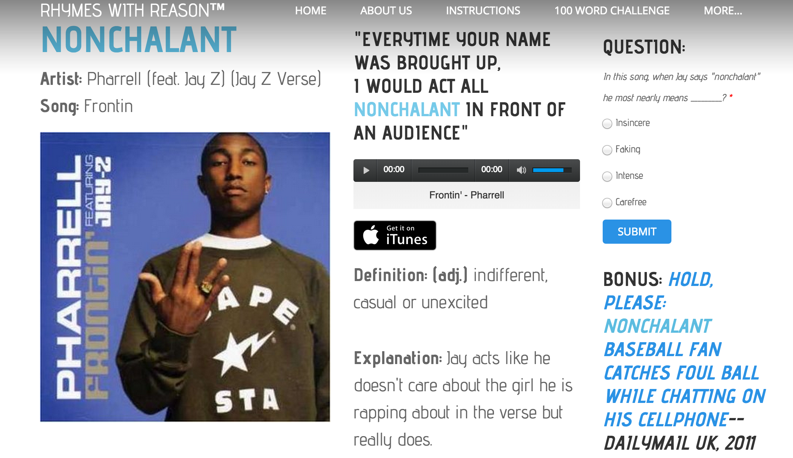

How it works
(1) The vocabulary word
(2) The song it appears in
(3) Sound clip from the song
(4) Definition and part of speech
(5) Contextual explanation of the song
(6) Multiple-choice question
BONUS: Example in other forms of media